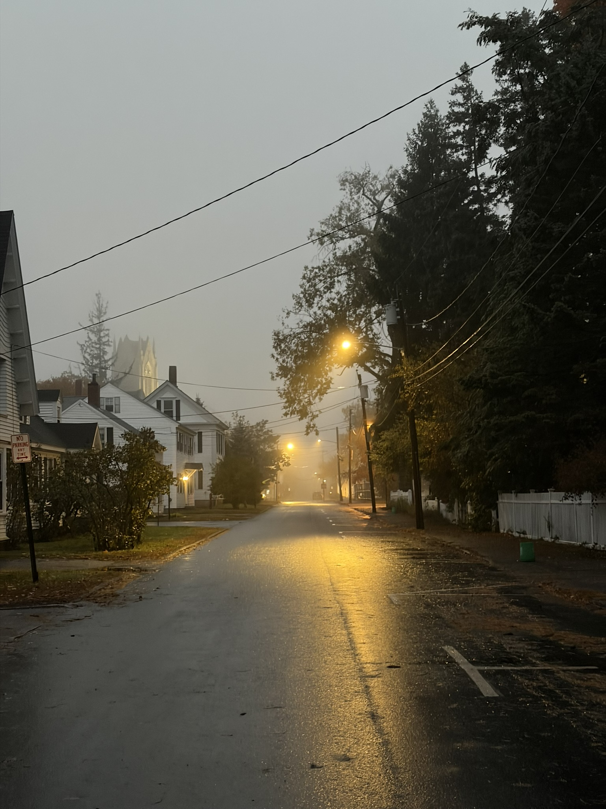

Blog post
Testing images
I just wanted to see if I could publish an article with images

Here is a cool imageViewing it in emacs, as suspected, sucks.
Blog post
I just wanted to see if I could publish an article with images

Here is a cool imageViewing it in emacs, as suspected, sucks.